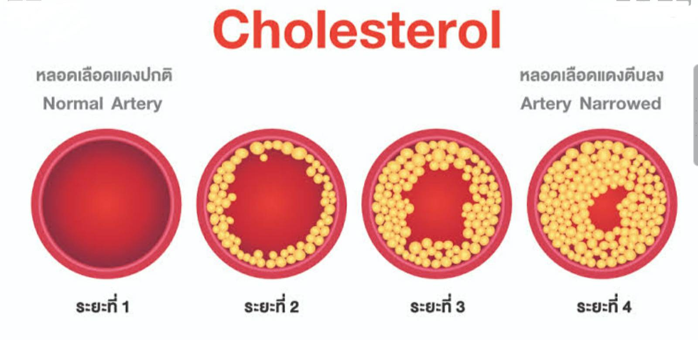
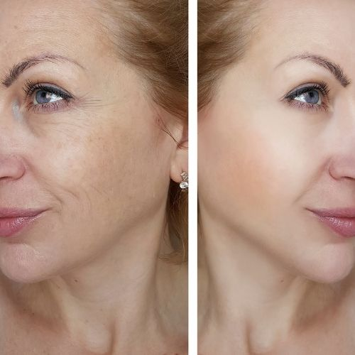
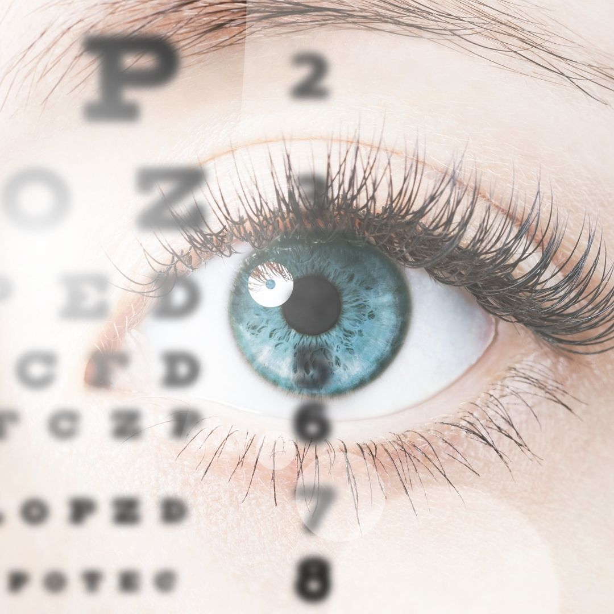
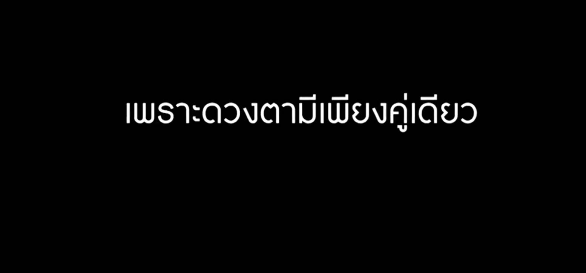
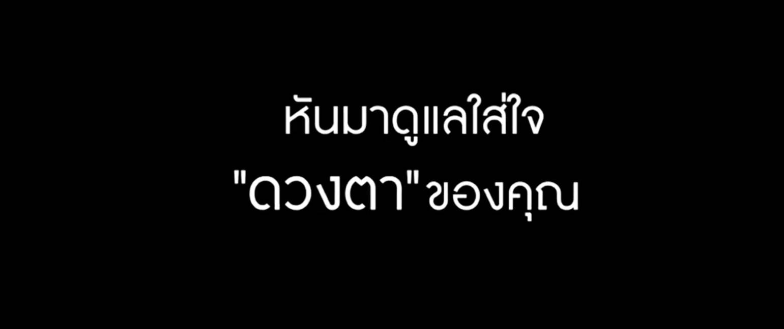
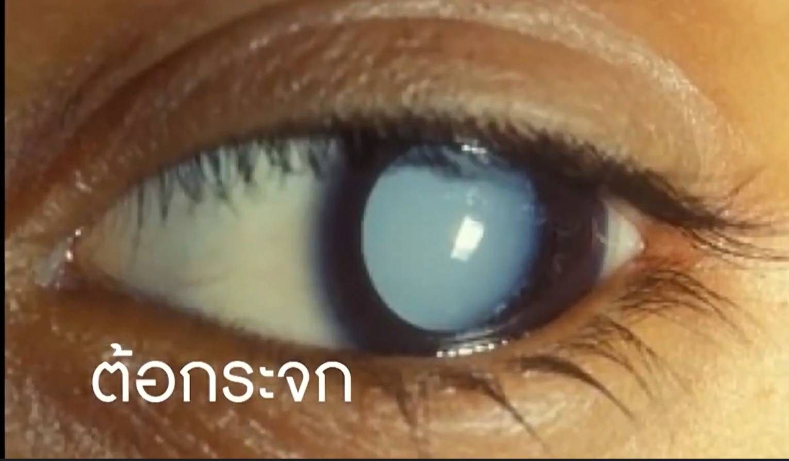
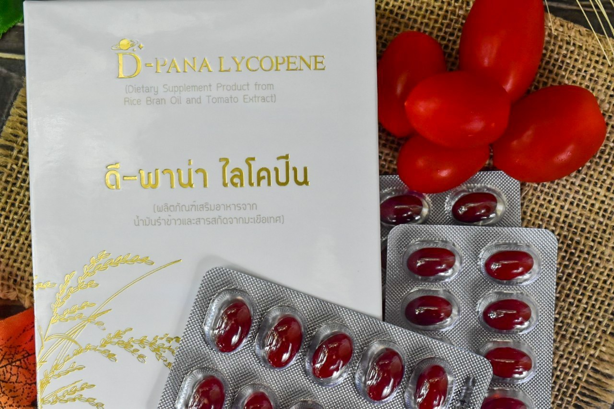
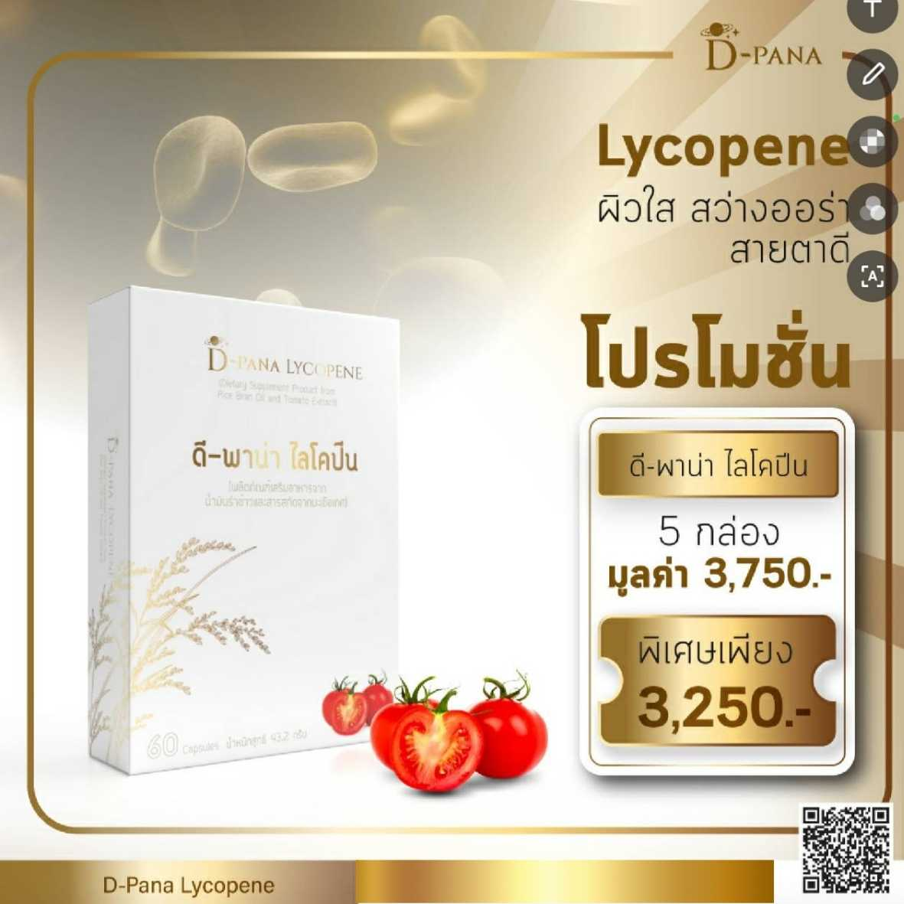

งานวิจัยที่เกี่ยวข้อง
มีงานวิจัย
ที่ได้การรับรองมาตรฐาน
และการทดลองประสิทธิภาพ
สารสกัดจาก"ไลโคปิน"
โดยสถาบันวิจัยระดับโลก
ในบรรดาแคโรทีนอยต์ทั้งหมด
ไลโคปิน
จัดเป็นสารต้านอนุมูลอิสระ
(Antioxidant)
"ที่ทรงพลังที่สุด"
"ไลโคปิน"
มีฤทธิ์ที่ดีกว่าเบต้าแคโรทีน
และแอลฟาโกโคฟีรอล
ถึง 2 และ 10
เท่าตามลำดับ
การศึกษาฤทธิ์ทางเภสัชวิทยา
ระบุว่า
สารไลโคปิน
มีฤทธิ์ต้านอนุมูลอิสระ
จึงทำให้ผิวใสอมชมพู
สุขภาพดี
ลดการเกิดฝ้า กระ
ได้อย่างมีประสิทธิภาพ
พร้อมปกป้องผิวจาก
รังสี
UVA
UVB
ลดการเผาไหม้ของผิว
จากแสงแดดได้ดียิ่งขึ้น
จากการทดลอง
ประสิทธิภาพ
สารสกัดจากไลโคปีน
โดยตรวจสอบจาก
การบริโภคมะเขือเทศ
เป็นเวลา 4
สัปดาห์ติดต่อกัน
สามารถลดการเกิด
ผื่นแดง
บนผิวหนัง
ที่เกิดจากรังสี
UV ได้
ไลโคปีน
เป็นสารต้านอนุมูลอิสระ
ที่มีประสิทธิภาพ
มากกว่าสารชนิดอื่นๆ
มีหน้าที่คัดกรอง
สิ่งที่เข้าและออกจากเซลล์
ช่วยกำจัดขยะในเซลล์
และป้องกันไม่ให้สารพิษ
เ
ข้าสู่เซลล์
เยื่อหุ้มเซลล์ที่แข็งแรง
มีความสำคัญในการ
ป้องกันโรคต่างๆ
-------------
ประโยชน์ของไลโคปีน
ต่อสุขภาพ
1.เพื่อช่วยป้องกันมะเร็ง
หลายรูปแบบ
2.ป้องกันความเจ็บป่วยโรคต่างๆ
3.ช่วยต้านอนุมูลอิสระ
ลดความเสี่ยงการเกิดโร
คหัวใจ

4.ช่วยในภาวะมีบุตรยาก
ผลจากการทดสอบพบว่าไลโคปีน
สามารถเพิ่มความเข้มข้น
ของอสุจิในผู้ชายได้
5.ช่วยป้องกันโรคกระดูกพรุน
ในผู้หญิงวัยหมดประจำเดือน
6.การเสริมด้วยไลโคปีน
ที่เป็นสารต้านอนุมูลอิสระ
จะช่วยลดพารามิเตอร์หรือ
ความเครียดภายในร่างกาย
ได้อย่างมีประสิทธิภาพ
ภายใน 30 วัน
7.ช่วยป้องกันโรคเบาหวาน
8.ป้องกันการเสื่อมสภาพ
ของอายุและต้อกระจก
9.ป้องกันการเกิดริ้วรอยแห่งวัย

10
ทำให้ผิวดูอ่อนเยาว์
11
ทำหน้าที่เป็นครีมกันแดดภายใน
และปกป้องผิวจากการ
ถูกแดดเผา
12
ป้องกันปัญหาของสายตา
ต่างๆ



ไลโคปีน
(Lycopene)
จากผิวมะเขือเทศ
เป็นสารในกลุ่มแคโรทีนอยด์
(Carotenoid)
ที่เป็นสารตั้งต้นของ
วิตามินเอ
ช่วยอะไร
สายตา
-------------
✔️ป้องกันโรคต้อกระจก

✔️ป้องกันเยื่อบุตาอักเสบ
✔️ช่วยลดความเสื่อม
ของเซลล์ลูกตา
✔️
ช่วยบำรุงสายตา
✔️ลดความเสี่ยงในการเป็น
โรคต้อกระจก
และโรคจอตาเสื่อม

✔️ช่วยปกป้องเซลล์ของ
จอประสาทตาไม่ให้ถูกทำลาย
✔️ลดอนุมูลอิสระและ
กรองแสงสีน้ำเงินที่จะ
ทำลายดวงตา
ทำให้มองเห็นในที่มืดได้ดี
---------------------------------
แนะนำผลิตภัณฑ์ ดี -
พาน่า กลูต้า

D-PANA Lycopene
มะเขือเทศ
มีโครงสร้างโมเลกุล
ที่ยาวที่สุด
ในกลุ่มเคโรทีนอยด์
แถมช่วยให้ผิวสวยด้วย
ผิวสวยใส
|
มีออร่า
สายตาดี

คุณรู้หรือไม่
สารไลโคปีน
มีฤทธิ์ต้านอนุมูลอิสระ
ชะลอความแก่
ต้านการอักเสบ
ช่วยลดไขมัน
และน้ำตาลในเลือดอีกด้วย

ดีพาน่าไลโคปีน
เป็นผลิตภัณฑ์เสริมอาหาร
ที่มีประโยชน์ต่อสุขภาพ
โดยเฉพาะช่วยดูแลสายตา
บำรุงผิวพรรณ
ช่วยบรรเทาภาวะ
ความดันโลหิตสูง
และลดระดับไขมันในเลือด
ที่เป็นสาเหตุของ
โรคเรื้อรังหลายชนิด

ไลโคปีนส่วนผสม
ต่อ 1
แคปซูล
---------------
- น้ำมันรำข้าว
432.5 มก.
- น้ำมันจมูกข้าว
50 มก.
- สารสกัดจาก
มะเขือเทศ 12.5
มก.
- ดีแอล -แอลฟ่า
ไทโคฟอริส แอซิด
5 มก.

ฟังคุณหมอพูดถึงไลโคปิน
เพราะดวงตามีแค่คู่เดียว
นพ.เปี่ยมโชค ชลิดาพงศ์
เสียงตอบรับจาก
ดี-พาน่า
ไลโคปีน
คุณเอ
พศิน พูดถึงไลโคปีน
ทานดีมีความแตกต่าง


โปรโมชั่น
ดีพาน่าไลโคปิน


---------------
สนใจสั่งซื้อสินค้า
กรุณาติดต่อผู้ที่ส่งข้อมูลนี้
ให้กับท่าน
---------------
หรือติดต่อตัวแทนจำหน่าย
ตามข้อมูลด้านล่าง
👇
ระบบ ดี พาน่า ซิสเต็ม
ช่วยขยายธุรกิจ
ด้วยโทรศัพท์มือถือ
สำหรับตัวแทนจำหน่าย
ของ
ดี พาน่า

ติดต่อคุณ : company
---------------------------------------------
AFF ID
:
0
LINE ID
:
TEL :
------------------------------------------------
ติดต่อ | สอบถาม


Change your
health
for
better life.